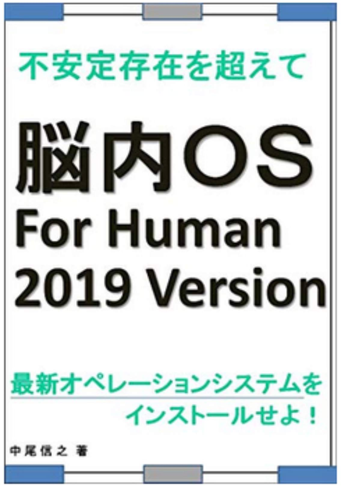
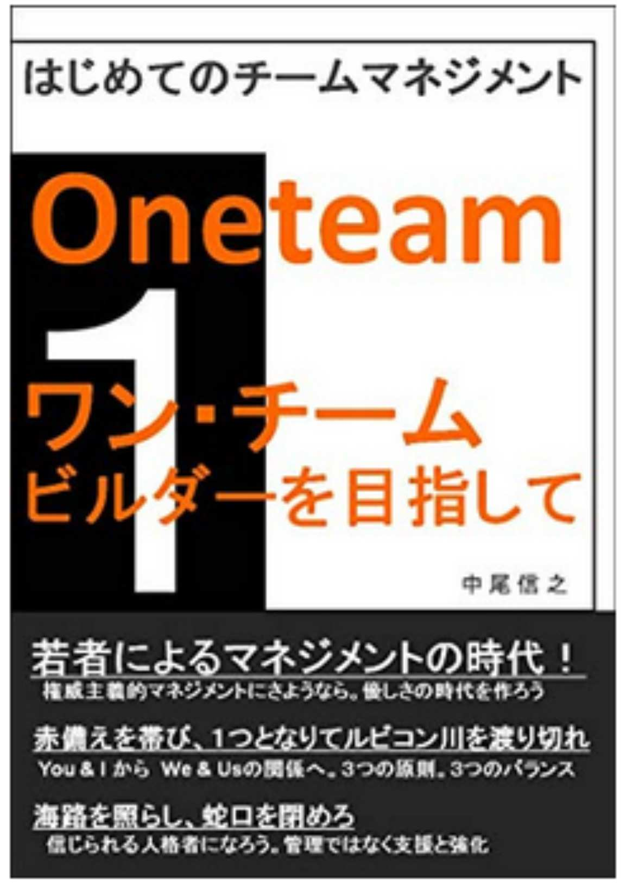
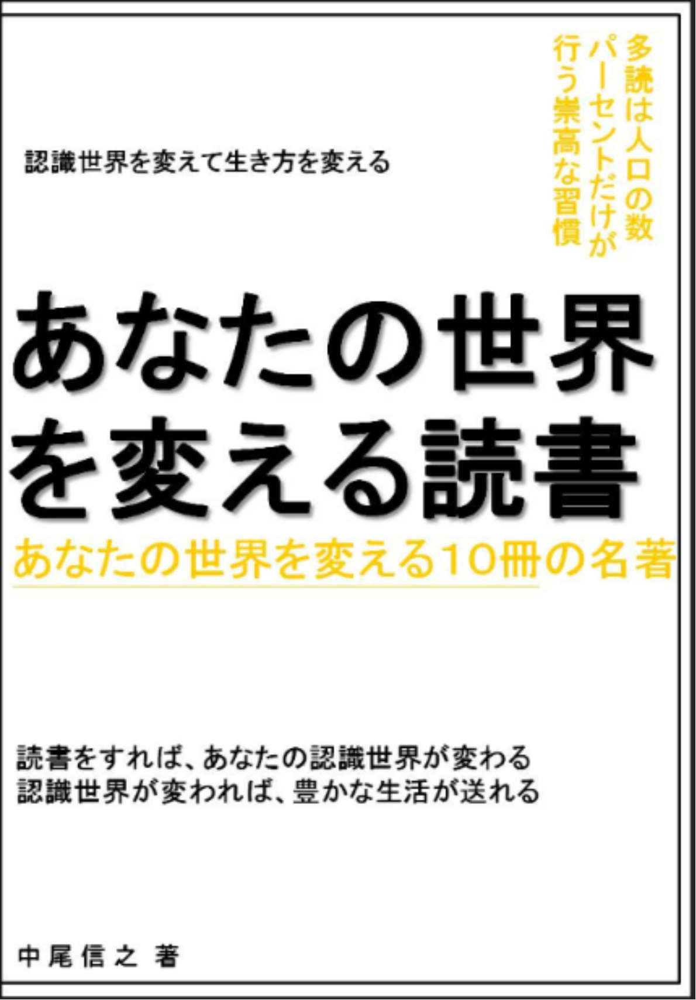
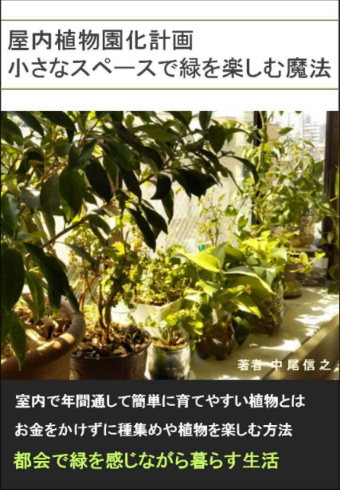

| あなたの世界を変える読書8 あなたの世界を変える１０冊の名著 あなたの世界を変える読書 あなたの世界を変える１０冊の名著 | |
| 中尾信之 | |
| (2018) | |
あなたの世界を変える読書８
あなたの世界を変える１０冊の名著
□はじめに
・最高の可能世界を創造せよ
□第一章 生き方のヒントをくれる本
１．１００のスキルよりたった１つの考え方で仕事が変わる
早くて質の高い仕事をする方法 高橋政史
２．「頭のゴミ」を捨てれば、脳は一瞬で目覚める！ 苫米地英人
３．あ、「やりがい」とかいらないんで、とりあえず残業代ください。
日野 瑛太郎
□第二章 世界のとらえ方を変える本
４．洗脳学園 苫米地英人
５．特定秘密保護法案と日本版ＮＳＣ 佐藤優 福島みずほ
６．そうだったのか！ ロスチャイルドと欧州財閥 安平雲軒
７．世界史とつなげて学べ 超日本史
日本人を覚醒させる教科書が教えない歴史 茂木誠
□第三章 科学によって見方を変える本
８．コレステロールは高いほうが心臓病、脳卒中、がんになりにくい
奥山治美
９．年をとってもちぢまないまがらない 船瀬俊介
１０．水の危機をどう救うのか 丹保憲仁
□おわりに
・いくつもの可能世界を創造しよう
あなたの世界を変える読書８
あなたの世界を変える１０冊の名著
□はじめに
・最高の可能世界を創造せよ
本シリーズも、今回で８回目を数える。本シリーズは、キンドル読み放題書籍の中から、私が面白いと思った本を紹介させて頂いているシリーズである。ここまでのシリーズ７回で、７０冊の本を紹介してきたことになる。その間に、私は８社目の仕事に関わったが、先方の都合により、今月にはプロジェクトが終了することになったため、また読書三昧、執筆三昧の日々に戻れそうである。まったく世の中は、どうなるか予測がつかないものである。ビジネスとは関係なしに、少し後味が悪いこともあったが、ビジネスにおいては全力を尽くし、先々のためになる提案も行い、やり切った達成感がある。
数か月前と同じく、育児、家事にも時間をかけながら、多読と、執筆、思考実験にこれからも専念ができると気分が切り替わり、すぐに数か月前と同じ最高の生活に復帰することができている。
少し余談ではあるが、最初に書いた本は、「自分を生きる天職（転職）のすすめ ～１００％実力を表現する面接法～」という面接方法を記した本であるが、実際、今年、関わった８社目の会社の社長との面会も、その後に、縁があってお会いしたベンチャー企業の社長との面会も、どちらも一回で自分のことを伝達し、どちらからも一緒に働きたいというお言葉を頂いた。タイミングや条件の問題などもあり、後者の社長とは、現在のところ一緒に働く機会があるかどうかは分からないのであるが、いづれにしても、私は、自分の書いた書籍の内容（１００％自分のことを表現し、伝達するということ）に改めて自信を持ったのである。
実は、それとは別に、今年はビジネスで、多くの企業の方々とお会いする機会もあった。その数は３ケ月で５４回という数である。やはり、その中でも、一冊目で記載した方法論によって、短期間で協力関係を構築することができることを実感した。これはテクニックによって、相手と上手く話をあわせているということをしたわけではない。 自分が想像している未来を、計画して実現させようとしている未来を、本当に信じてもらえるように相手に伝えているだけである。そして伝えたことは、責任をもって実現するつもりであった。 ただ、それだけである。
私は、１０年以上前から、 「成功の再現性を高める」 ということをビジネス現場において、自分のキーワードとしていた。成功を一度限りのものとせず、その成功のプロセスを分析して、方法論とすることができれば、成功を仕組化することができ、成功をいつでも再現することができると考えたからである。これができれば、働く組織が変わっても、プロジェクトが変わっても、周りが見えるようになった状態で、常に成功を再現できるということである。
これは、過去の成功プロセスを仕組化することからくる考えであるため、過去に依拠して未来を創ることである。しかし、よくよく考えてみると、自分が想像する現実的な未来、たとえば、関わっているプロジェクトが自分の計画通りに進み、想定通りの体制が整っている未来に強い臨場感を私が抱いているとする。そうすると、この未来の臨場感を持って、現在の目の前の相手の協力も引き出すことができると考えることも可能である。
我々は、多くの必要な情報を統合し、今まで指摘してきたように知のネットワークを自分の頭の中に構築することで、素晴らしい可能世界を創造することができる。そうすることで、この世界を現実化していける可能性があるのではないだろうか。
過去によるのではなく、現実から未来を構築し、未来から現実にアプローチする。 これが私たちの多読の、その効果の新しい可能性なのかもしれない。今回も、私が直近手にした本のうちで、紹介したいものと１０冊選定させて頂いた。ぜひ、今回の１０冊だけではなく、過去の書籍とあわせた知のネットワークを構築して頂けたらと考えている。それでは、今回も、素晴らしき読書の旅にでかけて参りましょう。
私が、本シリーズで紹介した時点では、読み放題対象だった書籍が、その後、読み放題ではなくなっているものも出てきていますが、その点はご容赦を頂きたく思っています。そのような書籍については、私の推薦文を読むことで要点部分をご理解頂くか、興味を持たれた場合は、ご購入頂くか、その作者の他の読み放題書籍を手にとって頂ければと考えています。その点、ご了承頂きたく、よろしくお願いいたします。
□第一章 生き方のヒントをくれる本
１．１００のスキルよりたった１つの考え方で仕事が変わる
早くて質の高い仕事をする方法 高橋政史
本書は、ものの考え方を見直すために、非常に役に立つ本である。特に前半の半分が、そのような内容となっており、後半はより実践的な内容となっている。本書のようなタイトルと、イラスト入りの本は、あたりはずれが大きいが、読み始めてすぐに良本であると感じた。サブタイトルでは年収１億円という数字が躍っているが、筆者は年収を上げることが良いことであるとは考えていないバランスのとれた方である。
筆者自身、結果につながらないことは、全部ゴミといわれて、目が覚めたというようなことが冒頭で紹介されている。ところが、本書を読んでいて思ったことは、筆者が多くの知識の習得をしようとして研鑽した結果、大きな思考の体系であるゲシュタルトを構築できているのではないかということであった。そのおかげで、いろいろな物事の本質を見抜けるようになったのではないかとも考えることができる。ただ、ひたすらに無駄に単に情報をインプットしてきたのではなく、それらがつながるようなインプットの仕方をしてきたからであるかもしれない。
しかし、効率よく、仕事をこなし、効率よく人生を生きていくためには、あれもこれもではなく、いらないものを捨ててフォーカスすることが重要であると本書は指摘している。このことは次に紹介する「頭の中のゴミを捨てる」という概念とも通じている。そして筆者は知識社会をフォーカス社会であると定義している。余計なことに時間をかけなくて済むように、最も重要なことにフォーカスすべきだというのである。しかし、多くの企業や人は、捨てる行為に躊躇して、いつまでもダメな事業やダメなことにエネルギーを使ってしまう。何をしないかを決めること、９割を捨てること、それが優れた経営者の思考の癖であるという。一流の人は、ひとつのことに打ち込んで集中をしているからこそ、強いのであるという。
戦術は見えるが、見えない戦略を大切にして、きちんと組み立てる。やり方に目を向ける前に、根本の戦略や目標（ゴール）をシンプルに整理する。これも、捨てるべきは捨てることができないと、戦略や目標を正しくフォーカスできないことにつながると言える。
この書籍で、もっとも気にいったのは、「頭の中で映像化する」ということの重要性である。いろいろな手順を頭の中で映像化できていれば、非常にスムーズに、その手順を行っていくこともできるし、映像化していれば、伝えたい内容を、明確に映像のように伝えることができる。
実は私は、この「あなたの世界を変える読書」シリーズを書く際には、１０冊全てを決めてから、「はじめに」と、「おわりに」の章を書くわけではなく、ある程度、例えば７冊ほどの本を選んだ段階で、「はじめに」を書くことが多い。実は、今回、この１冊目を選ぶ前に、「はじめに」を書き終わっていた。そして気が付いたのは、自分が書いた内容と同じようなことが、この本で紹介されていたということである。映像化するという方法論は、未来を頭の中で現実化することである。私が、誰かと話し合いを行う際に、過去のことや未来のことを、ありありとイメージして、そのことを伝えていると書いたが、これが、まさに映像化ということである。
また、映像化したことを伝えるにあたり、曖昧な言葉を選ばず定義がきちんと伝わる言葉を使うようにという指摘も非常に重要である。また、口癖としてのセルフトークの言葉にも意識をして、自分で誤った独り言を言わないようにという指摘も、過去に、このシリーズで紹介してきた考え方と同じである。
いろいろな無駄を捨て、シンプルにあるべき目標を見定め、フォーカスしていきたいものです。
２．「頭のゴミ」を捨てれば、脳は一瞬で目覚める！ 苫米地英人
今までも、苫米地英人さんの本については、シリーズ第一弾で紹介した「超瞑想法」をはじめ、いろいろな本を紹介してきた。今回の本にも、今まで紹介した本で取り上げられてきたキーワードが散りばめられているため、今までの理解を深めるためにも、過去に紹介した本とともに読んで頂きたい一冊である。
私自身も、他の本の合間に、苫米地さんの本を読みなおすことで、思考トレーニングをしていることもある。また、倍速で思考ができるようにするために、通常の話し言葉の３倍程度のスピードで音読をすることもたまにある。今回、この本を手に取りなおしたのは、数か月のプロジェクトで、新たな経験ができたと思う反面、頭の中にゴミがたまったように思う面もあったからである。読み直して、改めて理解できた部分があった。過去に読んだ際には、私の理解が足りていなかったのではと思う個所も存在した。
それは、ゲシュタルトができていれば、部分情報を聞いただけで、いろいろなアイデアが出せたり、全体を理解できたりするということである。まさに、多読をすることは、このゲシュタルトを構築していくことである。多読と、これに基づいた多くの経験により、大きなゲシュタルトが構築されていれば、環境が変わっても常に、いろいろなアウトプットができるようになる。これは、少しずつ違う仕事をしていく際にも役にたつことである。過去の経験がまったく無駄になるわけではなく、少しだけ似ているところがあれば、ポータブルなスキルを応用することで、迅速にスモールサクセスを積み上げていくことができるのである。これが、私の言う成功の再現性を高めるということと繋がっている。
そして、本書においても、苫米地さんは、現状の外にゴールを設定することの重要性を指摘している。ちまたの偽物のコーチたちや、一般の自己啓発本は、現状の内側の偽の手っ取り早いゴールを提示することで、クライアントを誘導してしまう。しかし、これでは、頭のゴミを捨てるどころか、頭のゴミにひっぱられて自分の本当のゴールから遠ざかることになるのである。
そう考えると、法人向けコーチをしているコーチエィも現状の枠内のことしか見えていないに違いないと思われる。苫米地さんのいう現状の外とは、厳しい定義があるからである。今いる会社の社長になることは現状の枠内であり、別の会社の社長になることで、やっと現状の外ということになるとされているのである。社長になることがいいかどうかは、別としても、環境を変えることが視点を変える良い機会になることは、このシリーズでも過去に紹介した。
片岡鶴太郎さんが、お笑い芸人絶頂時に、ボクシングに取り組み、プロライセンスを取得し、俳優としての幅を広げていき、そしてまた絵画に取り組み、ヨガに出会いというふうに、やりたいことを追求してきた姿を見てみれば、現状の外という考え方が、鶴太郎さんには、有効に働いているように思える。鶴太郎さんは、自身の内なる声から、やりたいことを探しているだけだというのである。私は鶴太郎さんのお芝居も好きであるし、絵画展にも何度か訪問をさせて頂いている。
今回、読み直して、もっとも印象的だった指摘は、下記の言葉である。ぜひ、参考にして頂きたい。
「ゴールと現状の自我という抽象度の違う次元の間に、臨場感という橋を架けることで、現状の自我が認識できる部分情報とゴールの世界（全体）との間に双方向性が働いてゲシュタルトが作られます。」
３．あ、「やりがい」とかいらないんで、とりあえず残業代ください。
日野 瑛太郎
本書は、日本人の働き方、働くということの概念を問い直している作品である。書かれていることは私にとっては、非常に当たり前のことであり、著者も、書籍の最後に、当たり前のことであるのに、それが日本では、当たり前とされていないことが問題であると指摘している。
雇用契約は、片務契約ではなく、双務契約である。労働者は労働を提供し、雇用者はその対価として給与および、その他の費用を支払う義務を負う。契約の合意も対等であれば、合意の解除も契約に乗っ取った合意の形成が必要となる。この概念が崩れたとたん、マルクスや、レーニンの指摘する通り、資本家による労働者の圧倒的優位な契約による、搾取の仕組みが成り立つ。
著者は「社会人」という日本独特の言葉にも疑問を投げかけている。また日本の労働者は、日本の労働者として従順に、また非効率な働き方をするように、大学でも洗脳され、また小学校から洗脳されているという指摘は、今まで、このシリーズで取り上げてきた、苫米地英人さんや、堀江貴文さんの指摘と同じである。学校教育の過程で、働くということは、どういうことかという考え方を刷り込まれているが、それが、法的な考え方としても未熟であり、個人の人権尊重という考えからも未熟であり、人間を機械のごとく貶めるような教育がほどこされてきたとも言えるのではないだろうか。
堀江さんの書籍で指摘されていたように、この考えは、あくまでも２０世紀の工場で働く人間だけを想定した教育システムなのである。いまでは、それらの多くの作業は、機械に任されているというのにである。
そして滑稽なのが、サービス残業を強制しているのは、会社の成果を出すためではなく、それが非効率であっても、会社のダメな文化や、ダメな体制を守るがためになのである。結果や、効率、効果ではなく、ダメな体制を維持するために、集合的無意識が働き、みなでダメなことを続けましょうというのである。
「効率よく仕事をして、さっさと帰り、翌日も効率よく仕事をする。」これが、成果にもつながり、残業代を抑え、組織に貢献する最も正しい方向性である。無駄に残業をし、成果も足さず、残業代だけがかさむ、そういう人間に限って、転職もできず、だらだらと、同じ組織にしがみついていたりすることも多いのかもしれない。
本書では指摘がされていなかったことであるが、私は、この無意味な残業メンタリティと、それを維持したがる文化は、無責任な天皇をトップにした大日本帝国軍の一億玉砕メンタリティの継続であると思っているし、作られた武士道の継続であるとも思っている。戦国時代の武士は、藤堂高虎であれ、真田昌幸であれ、山之内一豊であれ、仕えるべき相手は、都度見直していたからこそ、生き残っているのである。
よってもって、現在という過酷なビジネス環境においては、自分の能力を生かし、やりたい仕事をし、やりたい生活を送るために、常に自分の心情の変化、周りの環境の変化にあわせて、職業は自由に選ぶべきなのであり、それが憲法で保障されている、職業選択の自由なのである。
過労死は、殺人と変わらない法的な結果を招いているものであり、残業代未払いは、窃盗と同じ法的結果を別の方法により生じさせているものであるという指摘は、的を得ている。しかし、過労死も、サービス残業も悪いという印象が薄められている。そして、電通の若い職員が自殺した事件もニュースにこそなったが、司法では罰金５０万円という非常に軽い判決がでただけである。非常識な社会人の誤った常識に、経団連の経営者たちが甘えているだけなのである。若者が甘えているのではなく、経団連の経営者が甘えているのである。
会社の飲食会や、イベントごとも労働として従業員の時間を拘束するものであり、きちんと対価が支払われるべきである。仕事のまじめな話し合いができないでいて、お酒が入って、必要なコミュニケーションが深まるわけがないのである。経営者が夕食や、朝食を一緒にしたいというのも有難迷惑な話である。組織を良くするのは、朝食や夕食やお酒ではない。きちんとしたビジネスの話し合いの場である。目をそらしたい事柄に、しっかりと目を向けて、組織改革に真剣に取り組むことである。お酒の場では、まじめに資料をみて話ができるわけがないのである。
□第二章 世界のとらえ方を変える本
４．洗脳学園 苫米地英人
本書は、苫米地さんの初めてのフィクション作品である。私は、このシリーズでフィクションの作品を紹介したことは今までなかった。しかし、私はこの作品を単なる空想の作品として捉えることはできなかったために、取り上げることにしたのである。
苫米地さんが、オウム真理教をはじめ多くのカルト教や、多くの宗教の研究をされ、また教団信者の脱洗脳に関わった経験や、脳科学に関する研究の情報も本書には盛り込まれており、多くのリアルな情報を含んだ作品である。また、苫米地さんが、古武術や気功にも精通していることから、本書は、それらのエッセンスも盛り込まれており、アクション作品としても楽しめる内容になっている。ここではストーリーを細かく紹介しないが、アマゾンの説明に記載されている情報では、生徒会長が洗脳支配をしているという設定になっていることが公開されている。
学校という教育を行う舞台が、カルト宗教と同じで洗脳を行う現場にもなりうることが描かれているが、実際、以前のシリーズで紹介した、堀江貴文さんの「すべての教育は「洗脳」である～２１世紀の脱・学校論～」では、教育自体が洗脳であることが指摘されている。苫米地さんの書籍では、本人のためになることは教育と呼べるが、本人のためにならないことは洗脳であるという分類がなされているものもある。自分自身の経験から言っても、中学校や高校は、進学をするための学びをする場所という感覚があり、勉強の時間以外は、ある程度、個人の自由が尊重されていたように思う。本来は進学のためではなく、生きていくための術を学ぶ場所であるべきかもしれないが、そういう認識では通っていなかった。
中学校にも、一部、生徒を不良認定したがる、生徒指導のおかしな教員などもいたが、そこまでおかしな学校ではなかった。ところが、小学校はどうだったかというと、社会経験のあまりない教員が、独裁者のように担任を担当していると感じることも多かった。堀江さんの指摘でいうと、昔の製造業の現場を支えるための人材育成を未だに続けているという具合である。私は小学校の当時、喘息になることがあり、定期的に、一週間程度休んでいた。そのため、そこまで学校に洗脳されずに済んだのかもしれない。
しかし、私が、違和感が少なかった、中学校と、高校にしてみても、良い生徒とは、このようなものである。人生は、良い高校に入り、良い大学に入り、良い企業に就職したり、公務員になることであるという常識を刷り込まれていたのかもしれない。
この作品の舞台は学校であるが、会社組織や、地域の集まりであっても、この作品と同じように、洗脳の舞台となる可能性はある。また、いろいろな書籍で苫米地さんが指摘しているように、社会そのもの、金融資本主義という概念そのものが、私たちに刷り込まれた洗脳の結果、社会に受け入れられているとも言えるのである。
５．特定秘密保護法案と日本版ＮＳＣ 佐藤優 福島みずほ
シリーズ６段、７段では元外務省のロシア分析官であった佐藤優さんの書籍を紹介した。その中で、佐藤優さんは、現在は、戦前と戦後で断絶しているわけではなく、第一次世界大戦後の世界と、つながっていることを指摘していた。
そのような世界で、特定秘密保護法とＮＳＣ法を通してしまえば、民主主義を自ら破壊してしまうことになるのではないだろうか。
ナチスが行ったことは、成文憲法たるワイマール憲法を変えずに、それと反する一般法を乱立させることで、憲法を形骸化していくという方法であるという。そして、安倍政権は、これと同じ手法を利用していると指摘している。実際、安倍政権は憲法をかえずに、解釈を変えるとう方法も取っている。
憲法や法律すら変えなくても、解釈を勝手に変えることで、政治、政策を変えることができる。このことは、種子法の本を紹介した際も指摘した。自民党は種子法の改正を強行した。しかし、実際の規制対象を、法律ではなく、省令などの省庁が設定する規則にゆだねることにより、思ったように裁量で変えることができるようにしたのである。
この手法を、ありとあらゆる分野で行おうとしている。たとえば、海外労働者の受け入れに関する法律についても、対象となる業務を法律ではなく規則で定めるという法案の提出が検討されていることが報道されている。個別案件としての海外労働者の受け入れが、反対であるとか、賛成であるとか、そういう次元の問題ではなく、法律の主要部分を議会で決めないということが問題なのである。
インチキな安倍政権が行っていることは、国民の選んだ政治家が法律を作るという議会制民主主義の原則を壊していくことである。また、主権は国民にあるという国民主権を壊すことであると言える。しかし、よくよく考えてみると、一般会計が１００兆円で、特別会計が２００兆円と言われ、一般会計のみ国会審議対象で、多い方の特別会計が国会審議にかけられないどころか、帳簿自体もきちんと整えられてないし、情報が開示されない事実がある。調べようとした議員は、不可解な死をとげるというのが、日本の実体であると言われる。
国民主権、議会制民主主義、法治主義を守るためには、国民が情報を自由に集め、主権者として国の行為を監視できる必要がある。国の情報は国民のためにあり、国民は知る権利を保障されていることが必要である。国民は、権力に首輪をつける必要があり、情報はその要なのであることを常に認識する必要がある。現在の日本では、自民党に投票すること、それ自体が民主主義を破壊する行為なのである。
私たちは国家の主権者であり、税金を納めている株主のような存在であり、絶対的尊厳を持った個々人である。国は我々の生活環境を維持、向上させるためだけに、存在意義があるのである。無能なだけではなく、性格が悪い現在の自民党には、私たち主権者が引導を渡すべきなのである。
６．そうだったのか！ ロスチャイルドと欧州財閥 安平雲軒
ロスチャイルド、ロックフェラーという名前は、陰謀論の中で良く登場してくる名前である。ロスチャイルドという名前がどこから来ているのか不思議に思っていたが、初代が古銭商をする際に、「赤い楯 （ Rothschil d ）」を利用していたことから、その名前を利用することになったようである。
本書では記載がなかったが、苫米地英人さんの「日本人だけが知らない戦争論」、「明治維新という名の洗脳」などを読んで、日本の明治維新にもロスチャイルド家がかかわっていていたことを知ったため、その成り立ちについて知りたいという興味を持っていた。戊辰戦争時、薩摩藩は英国の支援を受け、幕府は仏国の支援を受けていたが、実際は、どちらの側もロスチャイルド家の資金が流れていたという。戦争をする際は、自国通貨の価値が下がるため、他国の通貨を用立て、他国資金で戦争をする必要があるからである。そして、この構図が、ロスチャイルド家が成長する過程における、世界の大きな戦争の構図なのである。
古銭商をへて、ドイツで地位を確立していった初代ロスチャイルドは、ドイツで地位を確立していく。兵隊不足のイギリスが植民地確保のためにドイツ人やスイス人傭兵を雇い入れていたのであるが、それらを派遣していたドイツのヴィルヘルムは多額の富を得ていたという。ここに食い込むことでロスチャイルド家は大きく成長していく。金融業の成長の始まりは、世界が不安定で戦争があるほど良いということであるから、世界の平和と金融業の発展は利益相反しているのである。
日本は第二次世界大戦後、戦争に巻き込まれていないが、世界の戦争がなくならないのは、「お金」のためであると言われる。明確に、そのように指摘する人は少ない。しかし、苫米地さんの本や、本書を読めば、金儲けのために戦争が必要とされるメンタリティを理解することができる。敵がいなければ、常に敵を作り、常に戦争をし続けてきたアメリカに、その例を見ることができるし、本書で、ロスチャイルド家が常に両陣営に貸し付けて利益を得ていることにも見ることができる。
司馬遼太郎さんの小説、「坂の上の雲」 の NH K での映像化にあたり、司馬遼太郎は戦争賛美のようになることには危惧を示したというが、実際、そのような印象を持たされる作品となっていた。富国強兵の名のもとに、実力を超えた戦争に突き進んだ、その結果が惨めな敗戦である。日露戦争の際に、間接的にロスチャイルド家に資金を借りたことが、本書でも紹介されているが、高橋是清が優秀だったのではなく、単純に南下するロシアを止めることをイギリス寄りの銀行家が日本に期待をしただけではなく、戦争でお金を貸して儲けるためにお金を貸し付けられたのである。
現在、銀行の預金を預金者が引き出そうとしても、高額の場合は銀行に現金がなく引き出せない。これは現金があまり使われなくなり、電子的にお金が処理されているからというだけではなく、もともと銀行は、手持ちのお金以上の額を貸し出しているため、自分たちが支払えるお金は、手元に、それほど持っていないからでもある。
これが信用創造の原理であり、この原理をロスチャイルドなどが生み出したという。それが、預かり証を、実際に預かっている金の現物以上に発行するという行為である。預かったものは、同時に返さなくても良いという大前提にたって金融業は成り立っている。しかし、この信用創造機能が、経済の不安定さを生んでいる元凶なのである。
本書は、ロスチャイルド家という人たちについて知ることができる本であるが、それだけではなく、ロスチャイルド家とともに膨らんできた、経済というものが、どういう本質をそなえているかということを考えるうえで、参考になる書籍であると感じられた。本書の後半では、ロスチャイルド以外の富豪のことも紹介もされているが、こちらは、読み飛ばしても良いように思われる。
７．世界史とつなげて学べ 超日本史
日本人を覚醒させる教科書が教えない歴史 茂木誠
本書は世界とのかかわりの中から、日本の歴史を見直すものであるが、冒頭は、科学的 な DN A 分析の結果なども踏まえて、日本人の起源は、どこにあるかというようなことや、倭（日本）という国の起こりよりも前の歴史から語られている。
ミトコンドリ ア DN A の分析からは、「日本人は、北東アジア人の一つである」といえ、「アイヌ人、本土日本人、沖縄人は同じ系統に属す」と言えることが指摘されている。また、「石器時代に北方から渡来した人々が豊かな縄文文化を育んだ上に、鉄器をもった弥生人が移民という形で浸透」し、お互いがゆるやかに融合することで、日本人になっていたというのである。
日本人の由来を考えることは、これくらいの理解で十分ではないだろうか。それ以上、細かいことを詮索する必要はないように思われる。大きな差異はない人々が、融合して今の日本人を作っている、それで良いのではないだろうか。もともと、人間と他の動物ですら、遺伝子データバンクの情報の大部分は共有しているのである。人間の中で、あれこれと差異を指摘することは、あまり意味がないように思われる。
さて、本書では、歴史書がきっちりと残っていない部分は、多種ある学説などを分かりやすく説明をしてくれているが、やはりある程度、歴史的な話になるのは、正確な王権が日本に根付いてからになっている。皇室に関する神話などは、明確なことが分からないため、私は、今後の発掘調査などで何か明確なことが分かるまでは、皇室は「稲作の伝来と密接にかかわる弥生の王権」というエッセンスだけを、本書から読み取ることにした。
邪馬台国と、天皇の王権が、同一のものか、別途のものか、別途として、親しい関係が、競合関係かも、明確な答えがないようである。そう考えると、２０００年しか離れていない時代のことも、人類は詳しく事実を把握できていないのである。逆に書物が残っている時代の明治維新のことも、戦争時代のことも私たちは、良く理解できていないのだと思い知らされる。歴史書がある時代は、逆に、勝者の解釈によって、事実が片方からの視点でゆがめられる可能性が大きいからである。
天皇という称号と、日本という国号を正式に採用したのが、西暦７０１年に大宝律令を天武天皇が制定したころであるという。 このあたりから、やっと、歴史の情報が記録されて残されているのだと言えそうである。しかし、７９７年に征夷大将軍に任ぜられた坂上田村麻呂は、東北の蝦夷討伐をしていたのであるから、その当時の日本は、まだ統一されていたわけでもなく、統一政権であったとは言えない状態である。
そういう状態を筆者は、 「平安時代の地方は無政府状態だった」「シリアや、ソマリア、アフガニスタンのような状態の中で、有力者が武装して自警団を組織し、これが武士団に発展していったのです。」 と指摘しており、これは非常に面白いと感じた。学校で習った歴史では、どのような政権がどのような政策をしたかをキーワードだけで習うが、実際、統治行為が成り立っていない状態であったというのは、面白い指摘である。そして、坂上田村麻呂の東征を最後に、朝廷は財政難から常備軍を持たず、治安維持は、地方の有力者や武士が行うようになっていったという記載から以下のようにまとめることができる。
・天皇を中心とする朝廷は、そもそも日本列島を一括して、独力で統治したことがない。
・朝廷は最低限の統治能力である治安維持すらできなかったため、武家政権の樹立は必然だった。
・中国では王朝が変わるごとに、支配層は一掃されて入れ替わっているが、日本では天皇家は、善政にかかわらなくても温存されてきた。
このような内容は、学校の歴史教育からは学ぶことができない視点である。また、筆者はイエズス会やキリシタン大名が日本人の奴隷売買を積極的に行っていた事実が、教科書で指摘せず、バテレン禁止令をマイナスのイメージを受け付けているのは、教科書を編纂してきた人間が、カトリックよりの人間だったからではと指摘している。我々が学んできた歴史は無味乾燥なものだった。
世界と日本の歴史を重ね合わせ、そして、人間の感性は、この２０００年で、それほど大きく変わっていないということを考えれば、ありありと歴史の事件を想像することができそうである。国と国との言い争いは、中国の各王朝と、日本の時々の政権が、やり取りしてきた頃から、まったく変わっていない。当時より、技術が進歩して、電話ですぐに顔を見ながら話せるようになっても今も昔も同じである。
王朝が滅びる要因は、軍事費を増やしすぎ、官僚制の維持費がかかりすぎ、それと並行して富の再分配が著しく機能不全になって、国が立ち行かなくなるという指摘も、時代を超えて適用できそうである。
□第三章 科学によって見方を変える本
８．コレステロールは高いほうが心臓病、脳卒中、がんになりにくい
奥山治美
本シリーズでは毎回、医療や健康に関する書籍を紹介してきた。そして、私自身もそれらの書籍の情報を参考にしながら、自分の生活を見直している。以前もお話をさせて頂いたように、歯のクリーニングと皮膚科にぬり薬をもらいに行く以外は、この１年医者にはかかっていないし、風邪をひいても、市販の風邪薬を飲むこともやめている。暴飲暴食もやめたので、去年はけなくなっていたズボンも簡単にはけるようになった。少しやせすぎたのではと思うこともあるが、特に問題はないようである。
私は、１年前の健康診断でコレステロール値が高いと言われて少しショックをうけていた。そして当時勤めていた会社から再検査を受けるようにいわれて、近くの内科医で再検査をし、やはり数値が高いと言って、コレステロール値を下げるための薬を処方された。昔、何度か風邪や帯状疱疹を見て頂いたお医者さんが言うには、「コレステロール値を下げる薬はあるが、副作用が強いので、様子をみて副作用が出たら飲むのをやめましょう」ということだった。実際、筋肉痛のような症状があり、すぐに利用をやめ薬を破棄した。その後、健康には特に問題がない。
今までも、このシリーズでは、カロリー栄養学や、１日３食などという健康の常識のほとんどが根拠のない誤りであることを指摘した書籍を紹介してきた。
私たちの命はコレステロールなくしては維持できず、脳や神経、結合組織、筋肉、皮膚や血において重要な働きをしていることを本書は指摘している。であるにも関わらず、何十年も前の誤ったコレステロールを悪者にする根拠に乏しい研究に基づいて、未だにコレステロールが悪者にされ続けているのである。いろいろな研究によりコレステロールは悪者ではないという反証がでているのに、なかなか、コレステロールの名誉回復はなされていないようである。そして、私のように健康診断でそのことを指摘されて、薬を渡される人々が少なからず存在しているのである。
数値としての悪玉コレステロールを減らしても、病気の発病率があがり、死亡率が上がったのでは、本末転倒なのである。 「 LD L コレステロール値を下げる根拠はどこにもない」 「 LD L コレステロール値が高い人ほど、長寿である」と著者は言う。
低いコレステロールの基準値を設定し、動脈硬化になると脅し、薬を処方する。薬を飲んでいる間は、コレステロール値は下がるが、病気を防ぐことにはつながらない。なぜなら、繰り返しになるが何十年前の古い偏ったデータによるコレステロール悪者説が誤りでコレステロール値と病気の因果関係がないからである。そして、薬が健康に対して良い効果がないばかりではなく、副作用のリスクだけが存在し、逆に健康を害してしまう。得をするのはお医者様と、製薬業界と、健康保険の仕組みに関与している人たちである。国際連合の機関であ る WH O の予算の多くも製薬会社が賄っており、日本の学界の研究費を援助するのも製薬会社であり、そういう体制が、患者の健康よりも、お金を目的にした医療体制につながっていると指摘されているのは、今まで紹介してきた医療に関する書籍と同じである。
あなたは、これでもコレステロールの薬を飲みますか。あなたは、無意味なバリュームを飲む検査を受けますか。私はコレステロールの薬もいらないし、バリュームを飲む検査も、ここ数年前から自由意思により拒否しています。
９．年をとってもちぢまないまがらない 船瀬俊介
８冊目に続いて医療と健康に関する書籍である。シリーズ第三弾で、船瀬さんの書籍、「３日食べなきゃ、７割治る」と、「やってみました。１日１食」を紹介した。私自身も、船瀬さんの書籍を読んだことも、ひとつの契機となり、去年から過食を避けるようにしている。
今回紹介する船瀬さんの書籍は、自分の両親が７０歳になってきていることや、祖母が９０歳を超えており、これら家族の健康のことが心配であることや、自分がパソコンや携帯を使って仕事をしている状況で自分の姿勢を気にしていることから、今の私に、ぴったりの内容であった。
そして、また今まで、このシリーズでは紹介していないが、他の本で読んで自身の健康のために続けていた、ちょっとした運動と同じ運動方法として、アイソメトリックス筋トレが紹介されている。私も、ここ数か月行っているのが、両手を胸の前で合唱して力を加えることである。また、両手を胸の前で結んで両側にひっぱることである。どちらも１０秒程度だけ行っている。ほかにも簡単な運動方法が紹介されているが、アイソメトリックス筋トレは自由に工夫して、思い通りに、どこででも行えばよいとされている点が非常に効率的である。
いつでも、どこでもできるから継続性につながる。筋肉は使わなければ落ちていき、そのことで骨も弱まる。逆に、適度に筋肉を鍛えることは、骨の強度も適度に保ち、また脳（心）も健全に保つことにつながると筆者は言う。そして、このアイソメトリックス筋トレをしていれば、医者もライザップも製薬会社も不要だと指摘しているのが面白い。今回の本では薬の副作用の恐ろしさが細かく指摘されているので、ぜひ、本書を読んで、薬や医者との付き合い方を考えてみて頂けたらと思う。
薬が効くように見えるのは、薬反射という効果であって、治っているのではないと言うのである。正常な治癒のための痛みや、発熱などは必要な状態であるのに、薬はこれらを排除して、逆に治る行為を遅らせて慢性化させてしまうと言われると、まったくその通りであるように思える。そして体毒として体内に残り、別の病気へのいざなうのである。本当に恐ろしい話である。
イスラエルで医者がストライキをしたら、その期間は死亡率が半減し、ストライキが終わったら死亡率は元にもどったと言われるほど、現在の医療の効果は怪しいものなのである。また、政府がガンで死んだと公表しているうちの８割は医療（猛毒の抗がん剤、有害な放射線、危険な外科手術）で殺されているというのである。これは、恐ろしい指摘であるが、非常にリアリティがあるように思われる。
健康診断で、悪くもないコレステロール値を悪者にして薬漬けにすることや、たいした病気でもない精神病に、うつ病という名前をつけて、薬漬けにすることとは、まったく同根なのである。そして、これらで大儲けをしているロックフェラー家たちは、自分の体には薬を使っていないという逆説的なことまで記載されている。
人々を導こうとしているのか、暴利をむさぼっているのか分からないが、鼻持ちならない連中である。また、６冊目で紹介したロスチャイルド家は赤十字という団体を通じて、世界の血液利権をむさぼっているという。しかし、技術が進んだ現在は輸血をしない手術が正しいという潮流ができつつあるのだという。ロックフェラーも、ロスチャイルドも、進化しつつある人間の世界には、もう必要がない必要悪なのではないだろうか。逆に彼らを認めることを続ければ、戦争はなくならず、薬害はなくならないのではないだろうか。
そもそもガンという定義が曖昧であるということも指摘されている。恐ろしい話である。テレビのＣＭでもガンが見つかったけれど、簡単に切除できるという精密医療機器の宣伝がされているが、それは放置しておいても良い主要なのではないかというのが、ＣＭを見るたびに思う感想である。切除しなければいけないと断定できるから切除するのではなく、なんだか便利な医療機器を作れたから、切除したくなりましたというような宣伝に見える。恐ろしい話である。あのようなテレビＣＭにも洗脳されないように注意が必要である。
結論として、推奨されているのは、「筋トレ」、「長息」、「笑い」、「少食」、「菜食」の５つである。ぜひ、皆様も自分にあったものからお試しいただければ幸いである。
１０．水の危機をどう救うのか 丹保憲仁
本書は水と人間の関係だけを取り扱っているのではなく、歴史的に人口がどのように増加してきたか、また今後どのような推移をたどるかというような巨視的な動きを提示してくれており、地球と人類全体を考えるうえで参考になる内容となっている。
日本は、人口増加から減少に転じていることが問題視されているが、中国やインドですら、あと何十年かすると、人口減少に転じるというのである。高齢化、高齢後の社会という問題を、日本が抱えており、これからの日本は下降曲線をたどることは推測され騒がれているが、世界的にそのような曲線をたどってくると思われるという視点は、私たちに欠けている視点である。
そしてまた、本書が指摘しているのは、これから人類は環境によるキャップを意識して生活の在り方を考えていくべきであるということである。１９７２年にローマクラブが成長の限界という報告をだして、資源が有限であることの警鐘をだし、そのことが話題になったが、それ以降も人口は増え続け人間の活動量は増加し続けている。人間の活動量の制約は、あくまで、その時々の技術により、最大限活用できるエネルギー量による制約をさし、技術力が上がれば、キャップとしての上限も変わる。
東京やシンガポールの都市がいかにして水資源の問題をクリアしてきたか、十分な水を確保しながら洪水を防いできたかなどが、細かく説明されている。シンガポールでは、汚水の再処理技術を最大化することや、海水を淡水化するエネルギーがかかるが、新しい取り組みをすることで、マレーシアからの水の輸入に頼らなくても良くなるように備えをしているという。
このような技術の進歩を有効に人類はいかせるからこそ、いろいろな資源の枯渇期限が、どんどん先延ばしにされているのである。しかし、技術の進歩よりも、人口の増加スピードや、資源の無駄遣いスピードが速ければ、上限に早く到達することになる。その時の上限とは何をもって、上限とするかという定義も重要である。
問題をややこしくするのは、科学的根拠がないにも関わらず、危機をあおってお金儲けの仕組みを導入しようとする経済的、政治的な動きが常に発生することでる。二酸化炭素の排出量で上限を決めることは賢明ではなさそうなこと、また排出権取引などという誤ったルールや、ごみの分別は無意味などころか、燃えるごみの燃焼効率を下げ、環境に悪いことも、今までのシリーズで指摘した。
ただ、明らかなことは、総体としてのＧＤＰを追い求める表面上の経済膨張は人間ひとりひとりの幸せに繋がらないということである。いくら技術の進歩などにより、環境からくる制約をクリアすることができるからといって、何も上限いっぱいまでエネルギーを使う必要もないのではないかということもある。
総体としてのＧＤＰを上げることで、あくせくと働き、不必要な家電をたくさん買いそろえては買い替え、必要以上の衣服を購入しては、着古さずに捨ててしまう。そのような不毛な連鎖を超えて、私たちは、必要以上の欲を刺激されることを避け、それによって、自分の時間を過ごせるようにすべきではないだろうか。
□おわりに
・ いくつもの可能世界を創造しよう
私たちの可能世界はひとつに限られない。たったひとつの金銭的目標に誘導するニセコーチが隆盛していたとしても、本来は人生のいくつもの要素のバランスを取るように導く考え方がある。
私は、昔から、いつかは本を出したいと考えてきた。２０代の後半から３０代前半は、短編集を書き溜めてきた。その時は出版という形に結びつけることができなかった。しかし、ようやく今年の３月にキンドル出版にトライすることにしたのである。
書き溜めた短編物語ではなく、まずはビジネス関連の書籍から形にすることにした。そして、英語版も２冊出すことができた。これらは非常に短期間で実行することができた。ちょうど、私が初めて短編物語を書き始めた頃の書くことの楽しさに没頭していた時と同じ気分を、また味わうことができたのである。
私には他にも、いろいろと実現できる可能世界がある。それらは、ひとつではなく、意思決定さえして行動すれば、すぐできるものもあれば、すぐには形にできないものもある。
しかし、それらの可能世界は既に、鮮明さの強弱の違いはあれ、あたまのなかに映像化されているのである。なかには、むかしから短編物語に描いてきたものもある。
ありうべき最高の可能世界をいくつも想像することで、その世界へのパスウエイを創造し、その目標にむかう道、そのものを楽しみながら生きていく、そのような自分の目標にフォーカスした、自由な生き方をしていこうではありませんか。
今回も、本書を手にして頂き誠にありがとうございました。
また、次回お会いできますように。 中尾信之
□作品紹介

脳内ＯＳ ＦＯＲ ＨＵＭＡＮ ２０１９ ＶＥＲＳＩＯＮ
最新オペレーションシステムをインストールせよ！
https://www.amazon.co.jp/dp/B07N1T1TZF

自分を生きる天職（転職）のすすめ ～１００％実力を表現する面接法～
http://www.amazon.co.jp/dp/B07BD3K67Z

はじめてのチームマネジメント ワンチーム・ビルダーを目指して
https://www.amazon.co.jp/dp/B07BJ98FTT

購買本部は本当に必要か スタッフ機能のあるべき姿を求めて
https://www.amazon.co.jp/dp/B07BQ9BFDS

あなたの世界を変える読書 あなたの世界を変える１０冊の名著
https://www.amazon.co.jp/dp/B07BT28HLV

あなたの世界を変える読書１１ あなたの世界を変える１０冊の名著
https://www.amazon.co.jp/dp/B07N4B2CXD

アニオタ革命 アニオタが世界を変える 銀河英雄伝説 神のみぞ知るセカイ から探る社会変革の可能性
https://www.amazon.co.jp/dp/B07CRQ3WWD

屋内植物園計画 小さなスペースで緑を楽しむ魔法
https://www.amazon.co.jp/dp/B07CWRK2CN

在庫管理の正解 在庫管理は、こんなに簡単だった
https://www.amazon.co.jp/dp/ B07GFS2YDN

新宿御苑の四季 写真集
Four seasons of Shinjuku Gyoen National Garden
https://www.amazon.co.jp/dp/ B07N83G4L5

吟遊物語集 吟遊詩人信